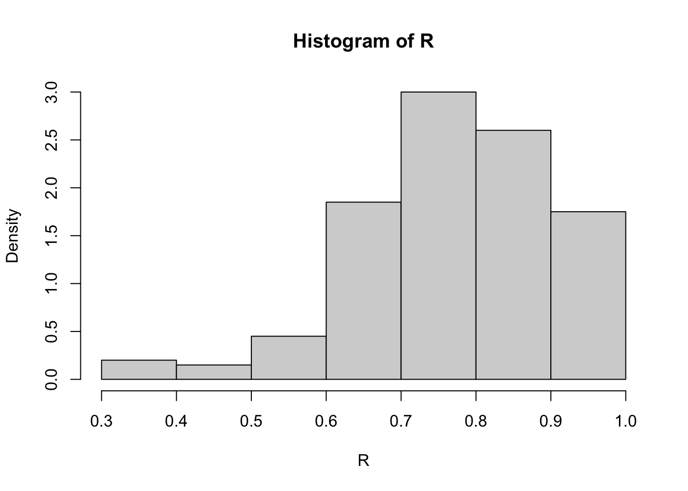

library(bootstrap) #for the law data
print(cor(law$LSAT, law$GPA))[1] 0.7763745# [1] 0.7763745
print(cor(law82$LSAT, law82$GPA))[1] 0.7599979# [1] 0.7599979This chapter continues from the previous chapter, introducing more resampling methods; jackknife and bootstrap techniques.
Most of the contents of this chapter are mainly from the reference book, Chapter 8 of Rizzo, M.L. (2007). Statistical Computing with R. CRC Press, Roca Baton.
Resampling methods is a way to use the observed data to generate hypothetical samples. It treats an observed sample as a finite population, and random samples are generated/resampled from it to estimate population characteristics and make inferences about the sampled population. It is useful when:
Do not know the underlying distribution of a population
The formula may be difficult to be calculated.
Some commonly used resampling methods include:
Cross-validation: Cross-validation is a model validation technique for assessing how the results of a statistical analysis will generalize to an independent data set. It is mainly used in settings where the goal is prediction, and one wants to estimate how accurately a predictive model will perform in practice.
Bootstrap: Bootstrap methods are often used when the distribution of the target population is not specified; the sample is the only information available.
Jackknife: The jackknife is a resampling technique used to estimate the bias and variance of a statistic. It is like a leave-one-out (LOO) cross-validation.
Permutation tests: Permutation tests are a type of non-parametric statistical test that involves rearranging the data points to test a hypothesis. They are used to determine whether the observed effect is statistically significant by comparing it to the distribution of effects obtained through random permutations of the data.
In statistics, the bias-variance tradeoff is the property of a model that the variance of the parameter estimated across samples can be reduced by increasing the bias in the estimated parameters. If we look at the Mean square error (MSE) of an estimator \(\hat \theta\) for a parameter \(\theta\):
Suppose we have a parameter \(\theta\) and an estimator \(\hat \theta\). The mean square error (MSE) of the estimator is defined as \[\mathrm{MSE}_{\theta}(\hat \theta)=\mathbb E[(\hat \theta-\theta )^2 ]= \mathbb{V}ar(\hat \theta) + [\mathbb b(\hat \theta)]^2,\] where \(\mathbb b\) is the bias of the estimator.
We start with the definition of the mean squared error (MSE):
\[ \mathrm{MSE}_\theta(\hat \theta) = \mathbb E\big[(\hat \theta- \theta)^2\big]. \]
Add and subtract \(\mathbb E[\hat \theta]\) inside the square: \[ \mathbb E\big[(\hat \theta- \theta)^2\big] = \mathbb E\big[(\hat \theta- \mathbb E[\hat \theta] + \mathbb E[\hat \theta] - \theta)^2\big]. \]
Expand the square: \[ \mathbb E\big[(\hat \theta- \mathbb E[\hat \theta])^2\big] + 2\,\mathbb E\big[(\hat \theta- \mathbb E[\hat \theta])(\mathbb E[\hat \theta] - \theta)\big] + (\mathbb E[\hat \theta] - \theta)^2. \]
The middle term vanishes because \[ \mathbb E\big[\hat \theta- \mathbb E[\hat \theta]\big] = 0. \]
Hence, \[ \mathbb E\big[(\hat \theta- \theta)^2\big] = \mathbb E\big[(\hat \theta- \mathbb E[\hat \theta])^2\big] + (\mathbb E[\hat \theta] - \theta)^2. \]
Recognizing that \[ \mathbb{V}ar(\hat \theta) = \mathbb E\big[(\hat \theta- \mathbb E[\hat \theta])^2\big] \quad \text{and} \quad b(\hat \theta) = \mathbb E[\hat \theta] - \theta, \] we obtain the bias–variance decomposition: \[ \boxed{ \mathbb E\big[(\hat \theta- \theta)^2\big] = \mathbb{V}ar(\hat \theta) + \mathbb b^2(\hat \theta)^2.} \]
Questions: Why do we care about the bias? Can we always find an unbiased estimator? What does it mean?
For most of the course, we focus on the unbiased estimator. This may often be obtained from using the LLN. Then, such as in the MC Chapter, we can compare the (relative) efficiency between the estimators, and discuss about the variance reduction.
Bootstrap estimates of a sampling distribution are analogous to the idea of density estimation. We construct a histogram of a sample to obtain an estimate of the shape of the density function. The histogram is not the density, but in a nonparametric problem, can be viewed as a reasonable estimate of the density. We have methods to generate random samples from completely specified densities; bootstrap generates random samples from the empirical distribution of the sample.
Suppose we have an observed random sample \(x=(x_1,\dots,x_n)\) from a distribution \(F\). If \(X^\ast\) is selected at random from \(x\), then \[P(X^\ast=x_i)=1/n,\quad i=1,\dots,n.\]
Resampling generates a random sample \(X^\ast_1,\dots,X_n^\ast\) by sampling with replacement from the observed sample \(x\). Then the RVs \(X_i^\ast\) are i.i.d. and uniformly distributed on the observed data points \(\{x_1,\dots,x_n\}\).
The empirical distribution function (ecdf) \(F_n(x)\) is an estimator of \(F(x)\). It can be shown that \(F_n(x)\) is a sufficient statistic for \(F(x)\); that is, all the information about \(F(x)\) that is contained in the sample is also contained in \(F_n(x)\). Moreover, \(F_n(x)\) is itself the distribution function of a random variable; namely the random variable that is uniformly distributed on the set \(\{x_1, \dots , x_n\}\). Hence the empirical cdf \(F_n\) is the cdf of \(X^\ast\). Thus in bootstrap, there are two approximations. The ecdf \(F_n\) is an approximation to the cdf \(F_X\). The ecdf \(F_m^\ast\) of the bootstrap replicates is an approximation to the ecdf \(F_n\). Resampling from the sample \(x\) is equivalent to generating random samples from the distribution \(F_n(x)\). The two approximations can be represented by the diagram
\[ \begin{aligned} F & \rightarrow X \rightarrow F_n \\ F_n & \rightarrow X^* \rightarrow F_n^* . \end{aligned} \]
To generate a bootstrap random sample by resampling \(x\), generate \(n\) random integers \(\{i_1,\dots, i_n\}\) uniformly distributed on \(\{1,\dots , n\}\) and select the bootstrap sample \(x^\ast = (x_{i_1} ,\dots , x_{i_n} )\).
Let \(\theta\) be the parameter of interest ( \(\theta\) could be a vector), and \(\hat \theta\) be an estimator. Then the bootstrap estimate of the distribution of \(\hat \theta\) is obtained as follows.
Suppose that we have observed the sample
\[x = \{2, 2, 1, 1, 5, 4, 4, 3, 1, 2\}.\]
Resampling from \(x\) we select \(1, 2, 3, 4\), or \(5\) with probabilities \(0.3, 0.3, 0.1, 0.2\), and \(0.1\), respectively, so the cdf \(F_{X^\ast}\) of a randomly selected replicate is exactly the ecdf \(F_n(x)\):
\[ F_{X *}(x)=F_n(x)= \begin{cases}0, & x<1 ; \\ 0.3, & 1 \leq x<2 ; \\ 0.6, & 2 \leq x<3 ; \\ 0.7, & 3 \leq x<4 ; \\ 0.9, & 4 \leq x<5 ; \\ 1, & x \geq 5 .\end{cases} \]
Note that if \(F_n\) is not close to \(F_X\) then the distribution of the replicates will not be close to \(F_X\). The sample \(x\) above is actually a sample from a Poisson(2) distribution. Resampling from \(x\) a large number of replicates produces a good estimate of \(F_n\) but not a good estimate of \(F_X\) , because regardless of how many replicates are drawn, the bootstrap samples will never include \(0\).
Recall that, in normal approximate, the \((100-\alpha)\)% confidence interval (for \(\mu\)) is given as \[ \bar{x}_n \pm z_{1-\alpha/2} \frac{\sigma}{\sqrt{n}}. \] In the above formula, we refer
The standard error (SE) of a statistic is the standard deviation of its sampling distribution. The se is often used in calculations of confidence intervals.
To estimate the se of an estimator \(\hat \theta\), we can use the bootstrap method. Let \(\hat \theta^{(1)},\dots,\hat \theta^{(B)}\) be the bootstrap replicates. The bootstrap estimate of the standard error of \(\hat \theta\) is given by the sample standard deviation of the replicates:
\[ \widehat{s e}\left(\hat{\theta}^*\right)=\sqrt{\frac{1}{B-1} \sum_{b=1}^B\left(\hat{\theta}^{(b)}-\overline{\hat{\theta}^*}\right)^2}, \] where \(\overline{\hat{\theta}^*}=\frac{1}{B} \sum_{b=1}^B \hat{\theta}^{(b)}\).
The number of replicates needed for good estimates of standard error is not large; \(B = 50\) is usually large enough, and rarely is \(B > 200\) necessary.
Example 8.2 (Bootstrap estimate of standard error). The law school data set law in the bootstrap [286] package is from Efron and Tibshirani [91]. The data frame contains LSAT (average score on law school admission test score) and GPA (average undergraduate grade point average) for 15 law schools.
| Observation | LSAT | GPA |
|---|---|---|
| 1 | 576 | 339 |
| 2 | 635 | 330 |
| 3 | 558 | 281 |
| 4 | 578 | 303 |
| 5 | 666 | 344 |
| 6 | 580 | 307 |
| 7 | 555 | 300 |
| 8 | 661 | 343 |
| 9 | 651 | 336 |
| 10 | 605 | 313 |
| 11 | 653 | 312 |
| 12 | 575 | 274 |
| 13 | 545 | 276 |
| 14 | 572 | 288 |
| 15 | 594 | 296 |
This data set is a random sample from the universe of 82 law schools in law82 (bootstrap). Estimate the correlation between LSAT and GPA scores, and compute the bootstrap estimate of the standard error of the sample correlation.
The bootstrap procedure is
library(bootstrap) #for the law data
print(cor(law$LSAT, law$GPA))[1] 0.7763745# [1] 0.7763745
print(cor(law82$LSAT, law82$GPA))[1] 0.7599979# [1] 0.7599979#set up the bootstrap
B <- 200 #number of replicates
n <- nrow(law) #sample size
R <- numeric(B) #storage for replicates
#bootstrap estimate of standard error of R
for (b in 1:B) {
# randomly select the indices
i <- sample(1:n, size = n, replace = TRUE)
LSAT <- law$LSAT[i] # i is a vector of indices
GPA <- law$GPA[i]
R[b] <- cor(LSAT, GPA)
}
#output
(se.R <- sd(R))[1] 0.1455406# [1] 0.1358393
hist(R, prob = TRUE)
The bootstrap estimate of se(R) is 0.1455406. The normal theory estimate for standard error of R is 0.115.
We can also use the boot(.) function in the boot package to compute the bootstrap estimate of standard error.
First, write a function that returns \(\hat \theta(b)\), where the first argument to the function is the sample data, and the second argument is the vector \(\{i_1, \dots , i_n\}\) of indices. If the data is \(x\) and the vector of indices is i, we need \(x[i,1]\) to extract the first resampled variable, and x[i,2] to extract the second resampled variable. The code and output is shown below.
my_r <- function(x, i) {
# want correlation of columns 1 and 2
cor(x[i, 1], x[i, 2])
}The printed summary of output from the boot function is obtained by the command boot or the result can be saved in an object for further analysis. Here we save the result in obj and print the summary.
library(boot) #for boot function
set.seed(777)
(obj <- boot(data = bootstrap::law, statistic = my_r, R = 2000))
ORDINARY NONPARAMETRIC BOOTSTRAP
Call:
boot(data = bootstrap::law, statistic = my_r, R = 2000)
Bootstrap Statistics :
original bias std. error
t1* 0.7763745 -0.01075929 0.1364617The observed value \(\hat \theta\) of the correlation statistic is labeled t1*. The bootstrap estimate of standard error of the estimate is se(ˆθ) . = 0.13, based on 2000 replicates. To compare with formula (8.1), extract the replicates in $t, so that the standard deviation of the replicates can be computed directly
sd(obj$t)[1] 0.1364617Recall that a bias of an estimator \(\hat \theta\) is defined as \[ \mathbb b(\hat \theta) = \mathbb E[\hat \theta] - \theta. \]
An example of a biased estimator is the MLE of variance, \(\hat{\sigma}^2 = \sum (X_i-\bar{X}_n)^2/n\) of \(\sigma^2 = \sum (X_i-\bar{X}_n)^2/(n-1)\), which has expected value \((1 − 1/n)\sigma^2\). Here, the bias is \(−\sigma^2/n\).
The bootstrap estimation of bias uses the bootstrap replicates of \(\hat \theta\) to estimate the sampling distribution of \(\hat \theta\). For the finite population \(x = (x_1,\dots , x_n)\), the parameter is \(\hat \theta(x)\) and there are \(B\) i.i.d. estimators \(\hat \theta^{(b)}\). The sample mean of the replicates {ˆθ(b)} is unbiased for its expected value \(\mathbb E[\hat \theta^\ast]\), so the bootstrap estimate of bias is
\[bias(\hat \theta) = \hat \theta^\ast − \hat \theta\], where \(\hat \theta^\ast = \sum_{b=1}^B \hat \theta^{(b)}\), and \(\hat \theta= \hat \theta(x)\) is the estimate computed from the original observed sample. (In bootstrap \(F_n\) is sampled in place of \(F_X\) , so we replace \(\theta\) with \(\hat \theta\) to estimate the bias.)
\(\oplus\) Positive bias indicates that \(\hat \theta\) on average tends to overestimate \(\theta\),
\(\ominus\) Negative bias is on average underestimate \(\theta\)
In the law data of Example 8.2, compute the bootstrap estimate of bias in the sample correlation.
# sample estimate for n=15
theta.hat <- cor(law$LSAT, law$GPA)
# bootstrap estimate of bias
B <- 2000 # larger for estimating bias
n <- nrow(law)
theta.b <- numeric(B)
for (b in 1:B) {
i <- sample(1:n, size = n, replace = TRUE)
LSAT <- law$LSAT[i]
GPA <- law$GPA[i]
theta.b[b] <- cor(LSAT, GPA)
}
bias <- mean(theta.b - theta.hat)
bias[1] -0.001063244# [1] -0.005797944The estimate of bias is -0.005797944. Note that this is close to the estimate of bias returned by the boot function in Example 8.3.
The patch (bootstrap) data contains measurements of a certain hormone in the bloodstream of 8 subjects after wearing a medical patch. The parameter of interest is
\[ \theta\coloneqq\frac{\mathbb E(\text { new })-\mathbb E(\text { old })}{\mathbb E(\text { old })-\mathbb E(\text { placebo })} \]
If \(|\theta| \ge 0.20\), this indicates bioequivalence of the old and new patches. The statistic is \(\bar{Y} /\bar{Z}\). Compute a bootstrap estimate of bias in the bioequivalence ratio statistic.
data(patch, package = "bootstrap")
head(patch) subject placebo oldpatch newpatch z y
1 1 9243 17649 16449 8406 -1200
2 2 9671 12013 14614 2342 2601
3 3 11792 19979 17274 8187 -2705
4 4 13357 21816 23798 8459 1982
5 5 9055 13850 12560 4795 -1290
6 6 6290 9806 10157 3516 351n <- nrow(patch) #in bootstrap package
B <- 2000
theta.b <- numeric(B)
theta.hat <- mean(patch$y) / mean(patch$z)
for (b in 1:B) {
i <- sample(1:n, size = n, replace = TRUE)
y <- patch$y[i]
z <- patch$z[i]
theta.b[b] <- mean(y) / mean(z)
}
bias <- mean(theta.b) - theta.hat
se <- sd(theta.b)
result <- data.frame(
Estimate = theta.hat,
Bias = bias,
SE = se,
CV = bias / se
)
knitr::kable(result, digits = 3, caption = "Bootstrap results for correlation estimate")| Estimate | Bias | SE | CV |
|---|---|---|---|
| -0.071 | 0.006 | 0.101 | 0.061 |
If \(|\mathbb b|/se \le 0.25\), it is not usually necessary to adjust for bias. The \(\mathbb b\) is small relative to standard error ( \(\mathbb b/se < 0.08\)), so in this example it is not necessary to adjust for bias.
The jackknife is a resampling technique used to estimate the bias and variance of a statistic.
Jackknife is like a leave-one-out cross-validation. Let \(\mathbf{x}= (x_1,\dots,x_n)\) be an observed random sample, and denote the \(i\)th jackknife sample by \(\mathbf{x}_{-i} = (x_1,\dots,x_{i-1},x_{i+1},\dots,x_n)\), that is, a subset of \(\mathbf{x}\).
For the parameter of interest \(\theta\), if the statistics is \(T(\mathbf{x})=:\hat \theta\) is computed on the full
Jackknife does not work when the function \(T(\cdot)\) is not a smooth functional!
The jackknife is another resampling method, proposed by Quenouille [225, 224] for estimating bias, and by Tukey [289] for estimating standard error, a few decades earlier than the bootstrap. Efron [88] is a good introduction to the jackknife.
Jackknife is a special kind of Cross-validation where we leave-one-out (LOO) the observation, and calculate the quantities on the remaining data. To fix the idea, let \(x=(x_1,\dots,x_n)\) be the observed data of samele size \(n\). The \(i\)th jackknife sample is defined as \(x_{-i}=(x_1,\dots,x_{i-1},x_{i+1},\dots,x_n)\), that is, the sample with the \(i\)th observation removed. Let \(\hat \theta=T(x)\) be the estimator of the parameter of interest \(\theta\). The \(i\)th jackknife replicate is defined as \(\hat \theta_{-i}=T(x_{-i})\), that is, the estimate computed from the \(i\)th jackknife sample. The jackknife estimate of bias is defined as
If ˆθ is a smooth (plug-in) statistic, then \(\hat \theta_{(\cdot)} = t\{F_{n−1}(x(i))\}\), and the jackknife estimate of bias is \[ \hat{b}_{jack} = (n − 1)(\hat \theta_{(\cdot)} − \hat \theta), \] where \(\overline{\hat \theta_{(\cdot)}}=\frac{1}{n} \sum_{i=1}^n \hat \theta_{(i)}\) is the average of the estimate from LOO samples, and \(\hat \theta=\hat \theta(x)\) is the estimate from the original observed sample.
Compute the jackknife estimate of bias for the patch data in the bootstrap package.
data(patch, package = "bootstrap")
n <- nrow(patch)
y <- patch$y
z <- patch$z
theta.hat <- mean(y) / mean(z)
print (theta.hat)[1] -0.0713061#compute the jackknife replicates, leave-one-out estimates
theta.jack <- numeric(n)
for (i in 1:n) {
theta.jack[i] <- mean(y[-i]) / mean(z[-i])
}
(bias <- (n - 1) * (mean(theta.jack) - theta.hat) )[1] 0.008002488The distribution of \(X^\ast\) is the empirical distribution \(F_n\) of the sample \(x\). The empirical distribution places mass \(1/n\) at each observed data point. The bootstrap uses the empirical distribution as an estimate of the true but unknown distribution \(F\).
The bootstrap is a resampling method that allows estimation of the sampling distribution of almost any statistic using random sampling methods.
Parametric bootstrap
Nonparametric bootstrap: In nonparametric bootstrap, the distribution is not specified.
set.seed(333)
n <- 1E4
B <- 1E4
x <- rnorm(n, mean = 5, sd = 2) #original sample
boot_means <- pbapply::pbsapply(1:B, function(i){
indices <- sample(1:n, size = n, replace = TRUE) #resample
boot.sample <- x[indices]
mean(boot.sample)
})
mean(boot_means)[1] 4.999525hist(boot_means, breaks = 50, main = "Bootstrap distribution of the mean", xlab = "Mean")
# Compute statistics
true_mean <- 5
boot_mean <- mean(boot_means)
df <- tibble(x = boot_means)
# Plot
ggplot(df, aes(x = x)) +
geom_histogram(aes(y = ..density..), bins = 50,
fill = "lightgreen", color = "black", alpha = 0.7) +
geom_density(color = "darkgreen", size = 1) +
geom_vline(xintercept = true_mean, color = "red", linetype = "dashed", size = 1.1) +
geom_vline(xintercept = boot_mean, color = "blue", linetype = "solid", size = 1.1) +
labs(
title = "Bootstrap Distribution of the Sample Mean",
x = "Bootstrap Mean",
y = "Density"
) +
annotate("text", x = true_mean, y = 0.3, label = "True mean = 5", color = "red", hjust = -0.1) +
annotate("text", x = boot_mean, y = 0.25, label = sprintf("Bootstrap mean = %.2f", boot_mean),
color = "blue", hjust = -0.1) +
theme_minimal(base_size = 14)Warning: Using `size` aesthetic for lines was deprecated in ggplot2 3.4.0.
ℹ Please use `linewidth` instead.Warning: The dot-dot notation (`..density..`) was deprecated in ggplot2 3.4.0.
ℹ Please use `after_stat(density)` instead.
The bootstrap is a general tool for assessing statistical accuracy. First we describe the bootstrap in general, and then show how it can be used to estimate extra-sample prediction error. As with cross-validation, the boot- strap seeks to estimate the conditional error ErrT , but typically estimates well only the expected prediction error Err.
The distribution of the finite population represented by the sample can be regarded as a pseudo-population with similar characteristics as the true population. By repeatedly generating random samples from this pseudo-population (resampling), the sampling distribution of a statistic can be estimated. Properties of an estimator such as bias or standard error can be estimated by resampling.
Bootstrap estimates of a sampling distribution are analogous to the idea of density estimation. We construct a histogram of a sample to obtain an estimate of the shape of the density function. The histogram is not the density, but in a nonparametric problem, can be viewed as a reasonable estimate of the density. We have methods to generate random samples from completely specified densities; bootstrap generates random samples from the empirical distribution of the sample.
The term bootstrap can refer to nonparametric bootstrap or parametric bootstrap. Monte Carlo methods that involve sampling from a fully specified probability distribution, such as methods of Chapter 7 are sometimes called parametric bootstrap. Nonparametric bootstrap is the subject of this chapter. In nonparametric bootstrap, the distribution is not specified.
To generate a bootstrap random sample by resampling \(x\), generate n random integers \(\{i_1,\dots, i_n\}\) uniformly distributed on \(\{1,\dots , n\}\) and select the bootstrap sample \(x^∗ = (x_{i_1} ,\dots, x_{i_n} )\). Suppose \(\theta\) is the parameter of interest (\(\theta\) could be a vector), and \(\hat \theta\) is an estimator of \(\theta\). Then the bootstrap estimate of the distribution of \(\hat \theta\) is obtained as follows.
These methods are widely used in statistical inference and have applications in various fields.
Normal Approximation for Correlation SE
For a bivariate normal population, the sampling distribution of the sample correlation \(r\) is approximately normal with variance
\[ \operatorname{Var}(r) \approx \frac{(1 - \rho^2)^2}{n - 1}. \]
Thus, the standard error (SE) under the normal approximation is
\[ \operatorname{se}_{\text{normal}}(r) = \sqrt{\frac{(1 - r^2)^2}{n - 1}}. \]
In the Law school example
Given: - \(r = 0.7763745\) - \(n = 15\)
We can compute:
\[ 1 - r^2 = 1 - (0.776)^2 = 1 - 0.602 = 0.398, \] \[ \operatorname{Var}(r) \approx \frac{(0.398)^2}{14} = \frac{0.158}{14} = 0.0113, \] \[ \operatorname{se}(r) = \sqrt{0.0113} = 0.106. \]
This gives a rough normal-theory estimate of 0.106.
A more accurate approximation uses the Fisher z-transform:
\[ z = \frac{1}{2}\log\!\left(\frac{1 + r}{1 - r}\right), \]
which is approximately normal with
\[ \operatorname{Var}(z) = \frac{1}{n - 3}. \]
Applying the delta method:
\[ \operatorname{se}(r) \approx (1 - r^2)\sqrt{\frac{1}{n - 3}}. \]
Plug in the values:
\[ \operatorname{se}(r) = (1 - 0.776^2)\sqrt{\frac{1}{12}} = 0.398 \times 0.289 = 0.115. \]
✅ Normal approximation (Fisher z) SE = 0.115
Alternatively, we may use the Bootstrap Estimate to compare with:
library(bootstrap) # for the law data
set.seed(123)
# Sample data
law <- data.frame(
LSAT = c(576, 635, 558, 578, 666, 580, 555, 661, 651, 605, 653, 575, 545, 572, 594),
GPA = c(339, 330, 281, 303, 344, 307, 300, 343, 336, 313, 312, 274, 276, 288, 296)
)
# Sample correlation
r <- cor(law$LSAT, law$GPA)
n <- nrow(law)
# Bootstrap estimate of SE
B <- 200
R <- replicate(B, {
i <- sample(1:n, size = n, replace = TRUE)
cor(law$LSAT[i], law$GPA[i])
})
se_boot <- sd(R)
# Normal approximation
se_normal <- sqrt((1 - r^2)^2 / (n - 1))
# Fisher z-approximation
se_fisher <- (1 - r^2) / sqrt(n - 3)
# Display results
data.frame(
Method = c("Bootstrap", "Normal theory", "Fisher z-approximation"),
SE = c(se_boot, se_normal, se_fisher)
) Method SE
1 Bootstrap 0.1200175
2 Normal theory 0.1061676
3 Fisher z-approximation 0.1146741Section 7.11 in Hastie, T., Tibshirani R. and Friedman, J. (2008). The Elements of Statistical Learning. Springer, 2nd edition.
Chapter 8 of Rizzo, M.L. (2007). Statistical Computing with R. CRC Press, Roca Baton.
Wu, C.F.J. (1986).Bootstrap and Other Resampling Methods in Regression Analysis. The Annals of Statistics.
Some useful R functions for resampling methods:
sample(): Generate random samples from a specified set of data points.
boot::boot(): Perform bootstrap resampling and compute statistics.